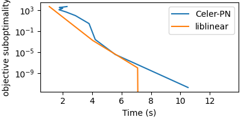

Note
Click here to download the full example code
Compare LogisticRegression solver with sklearn’s liblinear backend¶
Out:
Dataset: news20.binary
Downloading data from https://www.csie.ntu.edu.tw/~cjlin/libsvmtools/datasets/binary/news20.binary.bz2 (25.5 MB)
file_sizes: 0%| | 0.00/26.8M [00:00<?, ?B/s]
file_sizes: 0%| | 24.6k/26.8M [00:00<03:33, 125kB/s]
file_sizes: 0%| | 49.2k/26.8M [00:00<03:33, 125kB/s]
file_sizes: 0%|1 | 106k/26.8M [00:00<02:12, 201kB/s]
file_sizes: 1%|2 | 221k/26.8M [00:00<01:15, 351kB/s]
file_sizes: 2%|4 | 451k/26.8M [00:00<00:40, 644kB/s]
file_sizes: 3%|9 | 909k/26.8M [00:01<00:21, 1.22MB/s]
file_sizes: 7%|#7 | 1.83M/26.8M [00:01<00:10, 2.33MB/s]
file_sizes: 14%|###5 | 3.66M/26.8M [00:01<00:05, 4.52MB/s]
file_sizes: 20%|##### | 5.23M/26.8M [00:01<00:03, 5.60MB/s]
file_sizes: 25%|######6 | 6.81M/26.8M [00:01<00:03, 6.32MB/s]
file_sizes: 31%|########1 | 8.38M/26.8M [00:02<00:02, 6.83MB/s]
file_sizes: 37%|#########6 | 9.95M/26.8M [00:02<00:02, 7.18MB/s]
file_sizes: 43%|###########1 | 11.5M/26.8M [00:02<00:02, 7.42MB/s]
file_sizes: 49%|############7 | 13.1M/26.8M [00:02<00:01, 7.59MB/s]
file_sizes: 55%|##############2 | 14.7M/26.8M [00:02<00:01, 7.71MB/s]
file_sizes: 61%|###############7 | 16.2M/26.8M [00:03<00:01, 7.79MB/s]
file_sizes: 67%|#################2 | 17.8M/26.8M [00:03<00:01, 7.84MB/s]
file_sizes: 72%|##################8 | 19.4M/26.8M [00:03<00:00, 7.89MB/s]
file_sizes: 78%|####################3 | 21.0M/26.8M [00:03<00:00, 7.91MB/s]
file_sizes: 84%|#####################8 | 22.5M/26.8M [00:03<00:00, 7.92MB/s]
file_sizes: 90%|#######################4 | 24.1M/26.8M [00:04<00:00, 7.94MB/s]
file_sizes: 96%|########################9 | 25.7M/26.8M [00:04<00:00, 7.96MB/s]
file_sizes: 100%|##########################| 26.8M/26.8M [00:04<00:00, 7.29MB/s]
file_sizes: 100%|##########################| 26.8M/26.8M [00:04<00:00, 5.90MB/s]
Successfully downloaded file to /home/circleci/celer_data/libsvm/binary/news20.binary.bz2
Decompressing...
Loading svmlight file...
import time
import warnings
import numpy as np
from numpy.linalg import norm
import matplotlib.pyplot as plt
from sklearn import linear_model
from libsvmdata import fetch_libsvm
from celer import LogisticRegression
warnings.filterwarnings("ignore", message="Objective did not converge")
warnings.filterwarnings("ignore", message="Liblinear failed to converge")
X, y = fetch_libsvm("news20.binary")
C_min = 2 / norm(X.T @ y, ord=np.inf)
C = 20 * C_min
def pobj_logreg(w):
return np.sum(np.log(1 + np.exp(-y * (X @ w)))) + 1. / C * norm(w, ord=1)
pobj_celer = []
t_celer = []
for n_iter in range(10):
t0 = time.time()
clf = LogisticRegression(
C=C, solver="celer-pn", max_iter=n_iter, tol=0).fit(X, y)
t_celer.append(time.time() - t0)
w_celer = clf.coef_.ravel()
pobj_celer.append(pobj_logreg(w_celer))
pobj_celer = np.array(pobj_celer)
pobj_libl = []
t_libl = []
for n_iter in np.arange(0, 50, 10):
t0 = time.time()
clf = linear_model.LogisticRegression(
C=C, solver="liblinear", penalty='l1', fit_intercept=False,
max_iter=n_iter, random_state=0, tol=1e-10).fit(X, y)
t_libl.append(time.time() - t0)
w_libl = clf.coef_.ravel()
pobj_libl.append(pobj_logreg(w_libl))
pobj_libl = np.array(pobj_libl)
p_star = min(pobj_celer.min(), pobj_libl.min())
plt.close("all")
fig = plt.figure(figsize=(4, 2), constrained_layout=True)
plt.semilogy(t_celer, pobj_celer - p_star, label="Celer-PN")
plt.semilogy(t_libl, pobj_libl - p_star, label="liblinear")
plt.legend()
plt.xlabel("Time (s)")
plt.ylabel("objective suboptimality")
plt.show(block=False)
Total running time of the script: ( 1 minutes 30.320 seconds)